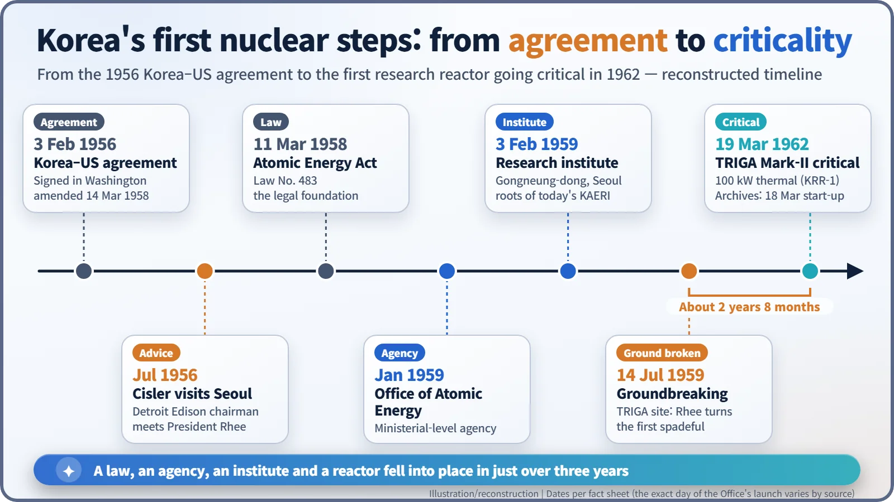
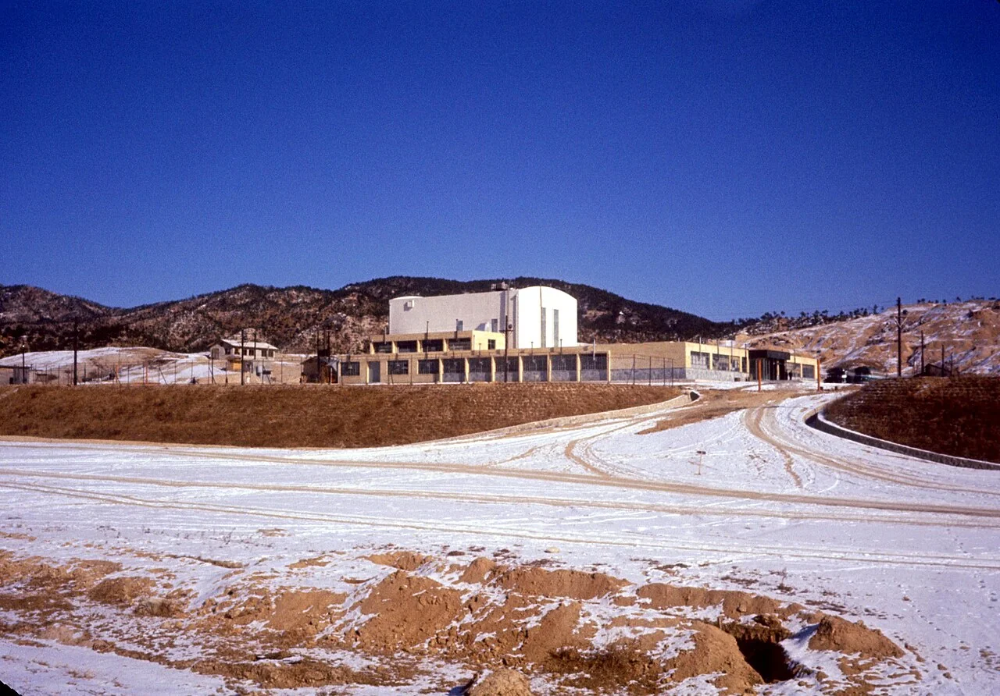
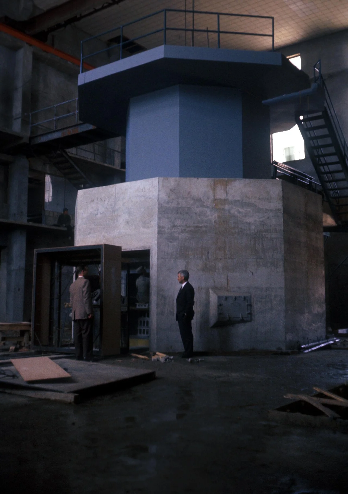
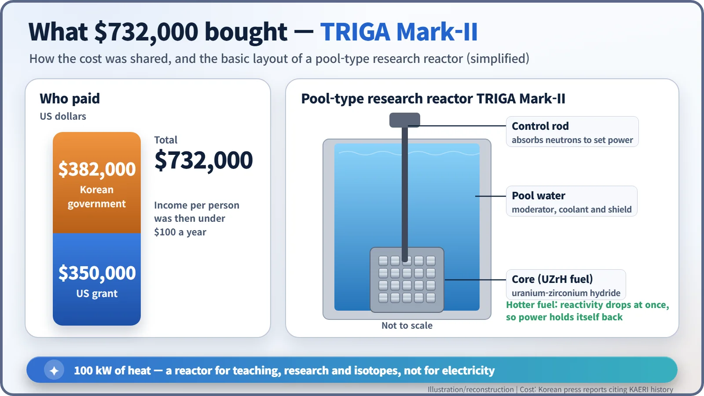

Nuclear History · 194
A $732,000 Reactor for a Country Earning Under $100 a Head — Korea's Office of Atomic Energy (1959) and TRIGA Mark-II (1962)
A country earning less than $100 a head paid $732,000, partly from a US grant, for a teaching reactor, and sent its young researchers abroad to learn.
In the late 1950s South Korea, where the average person earned less than $100 a year, spent $732,000 on its first nuclear reactor. Within little more than a year it passed an Atomic Energy Act, set up an Office of Atomic Energy and founded a research institute, and in March 1962 a 100-kilowatt TRIGA Mark-II research reactor went critical in Seoul.
A price tag of $732,000
$732,000. That was the price of South Korea's first nuclear reactor at the end of the 1950s. About $350,000 came as a US grant; the Korean government paid the remaining $382,000. At the time, the average Korean earned less than $100 a year. Why would a country only a few years out of a devastating war spend that kind of money on a reactor? [5] [6]
"Energy that comes from people's heads"
After President Eisenhower's "Atoms for Peace" speech in December 1953, the United States began signing nuclear cooperation agreements with friendly countries and offering research reactors and training. South Korea signed its agreement with the US in Washington on 3 February 1956. A month later the Ministry of Education set up an atomic energy section, and the country joined the International Atomic Energy Agency (IAEA) in August 1957. [2] [3]
In July 1956 Walker L. Cisler (1897–1994), chairman of the Detroit Edison power company, visited Seoul and met President Syngman Rhee (1875–1965). A line often attributed to him in Korean accounts runs: "Coal is energy you dig out of the ground, but nuclear energy is energy that comes out of people's heads." No English original has been found, so it is best treated as a story often told. Still, it captures the idea behind Korea's start: a country with few natural resources could at least grow its own experts. [6]
A law, an agency and a laboratory in little more than a year
In October 1957 Rhee called in Yun Se-won, head of the atomic energy section at the Ministry of Education, and ordered a plan for nuclear research. One Korean newspaper series says Rhee asked at that meeting whether Korea could build an atomic bomb; that comes from a single source and remains an unconfirmed anecdote. [5]
Then things moved fast. The Atomic Energy Act (Law No. 483) was promulgated on 11 March 1958. In January 1959 the Office of Atomic Energy opened as a ministerial-level agency reporting directly to the president. On 3 February 1959 the Atomic Energy Research Institute, the ancestor of today's Korea Atomic Energy Research Institute (KAERI), was founded in Gongneung-dong in north-eastern Seoul. Korea's National Archives gives the institute's founding as March, so sources differ by a month. [2] [4]

The president's spade, then two years and eight months
On 14 July 1959 ground was broken for Korea's first reactor on a hillside in Gongneung-dong, with President Rhee turning the first spadeful of earth himself. The machine was a TRIGA Mark-II, made by General Atomics of San Diego. [4] [6]

Construction took roughly two years and eight months. In March 1962 the reactor finally went critical, meaning a fission chain reaction kept itself going at a steady level. Sources differ by a day: KAERI's official history gives 19 March 1962 as the date of criticality, while Korea's National Archives gives 18 March for completion and start-up. A commemorative stamp was issued for the opening ceremony. The reactor became known as KRR-1, Korea Research Reactor-1. [1] [3] [4]

What do you do with a 100-kilowatt reactor?
TRIGA stands for Training, Research, Isotopes, General Atomics. A working group that included Edward Teller designed it to be a reactor safe enough for students to operate. The prototype, a Mark I, started up at the company's San Diego site on 3 May 1958; in all, 66 TRIGA reactors have been built in 24 countries. [7] [8]
The trick is in the fuel: uranium mixed with zirconium hydride (UZrH). As this fuel heats up, its ability to sustain fission drops at once. If power suddenly rises, the fuel puts on its own brakes. The fuel sits at the bottom of a deep tank of water, and the water does three jobs at once: it slows neutrons down (a moderator), carries away heat (a coolant) and blocks radiation (a shield). Hence the name "pool-type" reactor. [8]

KRR-1 produced 100 kilowatts of heat — about what 50 household electric heaters give off. It never made electricity. It was a classroom: a place where students and researchers could run a real reactor, do experiments with neutrons and make radioactive isotopes.
What outlasted the reactor
At the same time, the government sent young researchers abroad. Yun Se-won and Kim Hee-gyu went to the international nuclear school at Argonne National Laboratory in the US as the first state-funded trainees, and, according to one Korean press account, more than 230 people were eventually sent to the United States and Britain. Many came back to staff the institute and universities, and later to build the country's nuclear power plants. [6]
In 1972 a second reactor, the 2-megawatt TRIGA Mark-III (KRR-2), joined the first. Both shut down in 1995, the year the new research reactor HANARO reached criticality, and were later decommissioned. The reactors are gone, but the people trained around them stayed. What a poor country bought for $732,000 was perhaps less a reactor than a chance to learn. [4] [5]